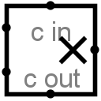

| Library: | Arithmetic |
| Introduced: | 2.0 Beta 20 |
| Appearance: |  |
This component multiplies two values coming in via the west inputs and outputs the product on the east output. The component is designed so that it can be cascaded with other multipliers to multiply a multiplicand with more bits than is possible with a single multiplier: The carry-in input provides a multi-bit value to be added into the product (if it is specified), and a carry-out output provides the upper half of the product result, which can be fed into another multiplier.
If the multiplicand, the multiplier, or the carry-in input contain some floating bits or some error bits, then the component will perform a partial multiplication. That is, it will compute as many low-order bits as possible. But above the floating or error bit, the result will have floating or error bits. Note that if the carry-in input is completely floating, then it will be assumed to be all-zeroes.
When the component is selected or being added,
Alt-0 through Alt-9 alter its Data Bits
attribute.
None.
None.